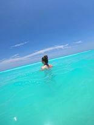

Nestled along the pristine shores of the Yucatan Peninsula, Cancun's crystal-clear waters beckon adventure seekers and watersports enthusiasts from around the globe. The turquoise hues of the Caribbean Sea provide the perfect backdrop for a thrilling aquatic playground, making Cancun a premier destination for those seeking sun-soaked excitement.
Cancun's beaches are renowned for their powdery white sands and warm, inviting waters. The calm and gentle waves create an ideal setting for various watersports, making it a haven for both beginners and seasoned enthusiasts. Snorkeling in the vibrant coral reefs that fringe the coastline reveals a mesmerizing underwater world teeming with colorful marine life. The Mesoamerican Barrier Reef, the second-largest coral reef system globally, offers a kaleidoscope of aquatic wonders just waiting to be explored.
For those craving a more adrenaline-fueled experience, Cancun's watersports scene has something for everyone. Jet skiing allows thrill-seekers to zip across the water, feeling the rush of the wind against their faces. Parasailing provides a unique perspective of the coastline, offering breathtaking aerial views of the cityscape and lush landscapes.
Diving into the depths of the Caribbean Sea unveils a world of underwater treasures, with numerous dive sites catering to all skill levels. From the eerie beauty of underwater caves to encounters with majestic sea turtles, Cancun's dive sites are as diverse as they are enchanting.
Windsurfing and kiteboarding enthusiasts find their paradise in Cancun, where consistent winds and wide-open waters provide the perfect conditions for these exhilarating sports. Lessons and rental services abound, ensuring that even novices can experience the thrill of gliding across the water.
As the sun sets over the horizon, Cancun's beachfront transforms into a lively hub of activity. Beach clubs and waterfront bars offer the perfect spots to unwind and share tales of the day's aquatic exploits. Whether seeking relaxation or adrenaline-pumping adventures, Cancun's sea and watersports scene promises an unforgettable experience for all who dip their toes into its azure embrace.